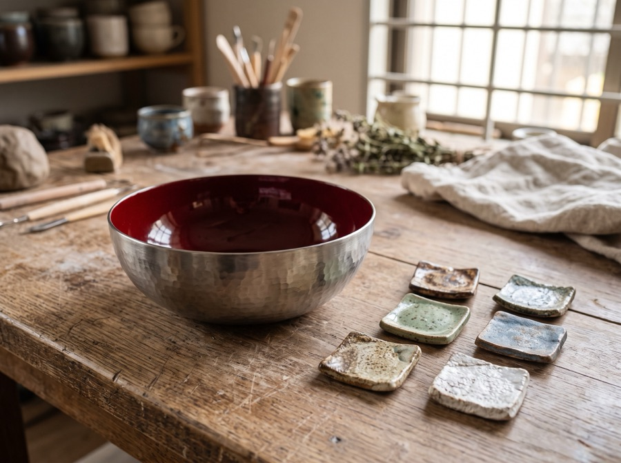

季節の新作: 冬のギフトカトラリーセット
三条打刃物の鍛えと、燕のプレス精度を一枚に
三層構造の熱伝導、プレス一体成型の両手鍋
鎚起銅器の技を宿す、うつわシリーズ
プレス成型のシームレスボディ、鏡面二重タンブラー
プレスで成形し、職人の手で鏡のように磨き上げる。燕三条の技術がひとさじに宿る。
プレス機と研磨職人の手仕事を間近で見られる、直売所ツアーを開催中。
お中元・引き出物に。熨斗対応の鏡面カトラリーギフトセット。

燕三条の直売所と、全国の取扱店をご案内します。鏡面の輝きは、ぜひ実際の光の中でご覧ください。